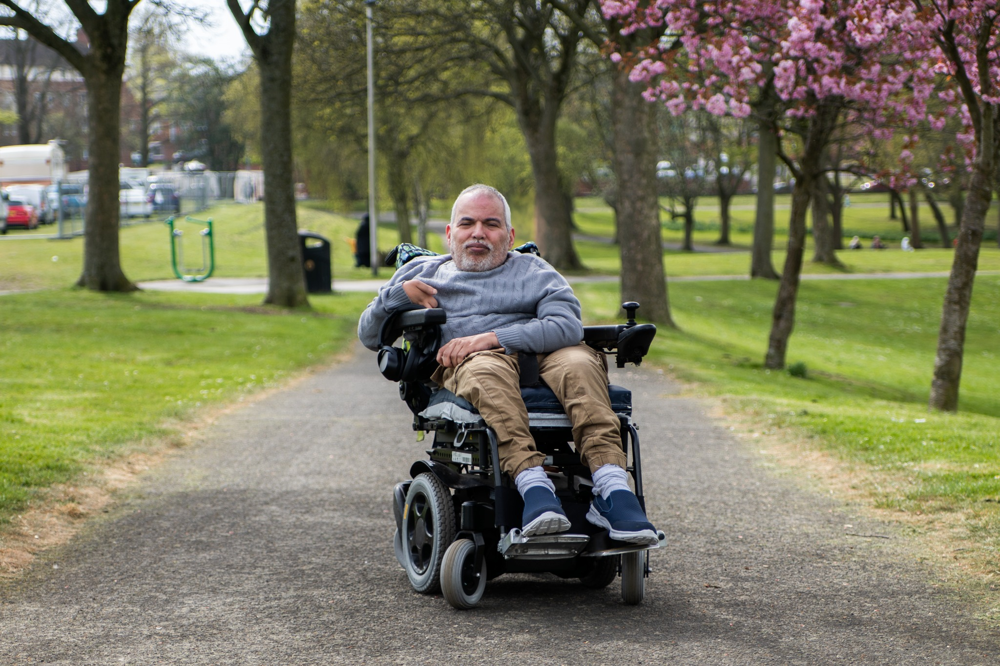
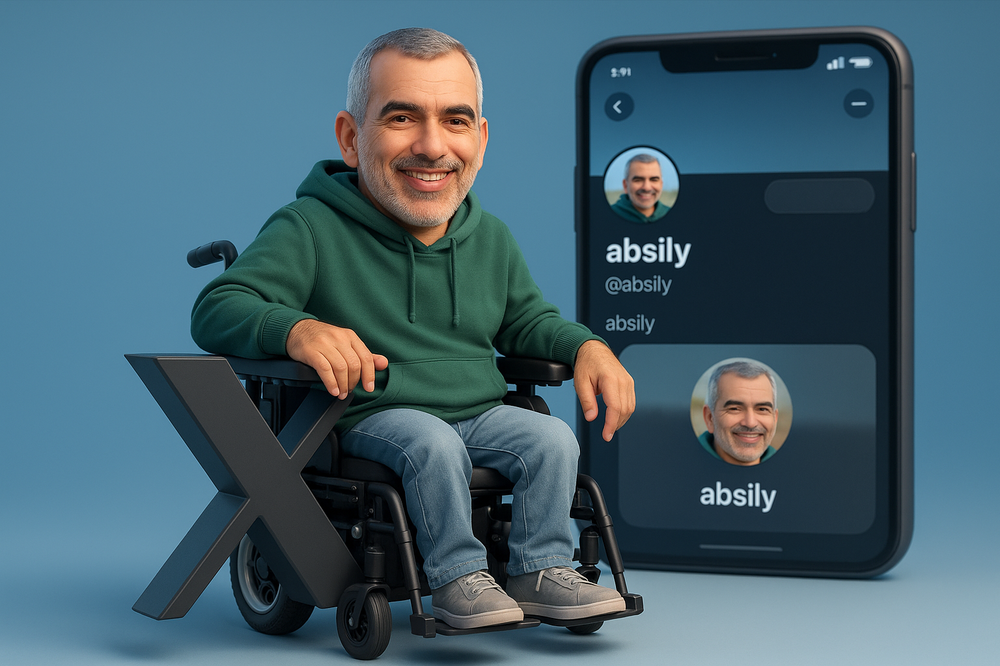

من هنا بدأت قصتي...

وُلدت في 23 أكتوبر 1971 في جنزور - المشاشطة. الأشهر الستة الأولى من حياتي كانت نقطة تحول، حيث تعرضت لحمى شديدة أدت لإصابتي بشلل الأطفال، مما فرض عليّ تحدياً صحياً مبكراً.
في عام 1976، وبسن الخامسة، سافرت إلى بلغراد في رحلة علاجية استمرت ست سنوات، حيث درست الابتدائية هناك وأصبحت اللغة الصربية جزءاً من هويتي.
عدت إلى ليبيا عام 1983، ثم إلى فيينا لفترة علاج قصيرة. عند استقراري في الوطن، واجهت واقعاً صعباً: غياب البنية التحتية والتعليم المدمج لذوي الإعاقة. لم أستسلم، بل صنعت مدرستي الخاصة من خلال البرامج الوثائقية والتعليمية مثل "افتح يا سمسم".
في 2004، أطلقت أول موقع لي "جنزور ماي هوم". ومن هناك انطلقت إلى عالم المنتديات ثم التواصل الاجتماعي. عملت مصمماً وناشطاً، وتركت بصمتي في اللجنة البارالمبية والأولمبياد الخاص الليبي.
اليوم، من برمنغهام، أواصل رحلتي في الدفاع عن حقوق الإنسان والإعاقة، مؤمناً بأن الإرادة تصنع المستحيل.
نظرة عامة على مسيرتي التقنية، مهاراتي العملية، وإتقاني للغات منذ عام 2004

أنا مطور ومصمم مواقع إلكترونية أمتلك خبرة طويلة في مجال تصميم وتطوير وإدارة المواقع الإلكترونية منذ عام 2004، حيث كانت بدايتي بإطلاق أول موقع إلكتروني لي تحت اسم "جنزور ماي هوم". خلال مسيرتي اكتسبت خبرة واسعة في تطوير المواقع باستخدام WordPress و Joomla، بالإضافة إلى إدارة المواقع وتحسين أدائها وتجربة المستخدم.
أمتلك مهارات احترافية في تصميم المواقع الإلكترونية الحديثة وإنشاء واجهات عصرية ومتجاوبة مع جميع الأجهزة، إلى جانب خبرة في التصميم الجرافيكي وتصميم الهويات البصرية والإعلانات الرقمية.
كما لدي خبرة جيدة في إدارة حسابات مواقع التواصل الاجتماعي، وإنشاء المحتوى الرقمي، وتنظيم الحملات التسويقية الإلكترونية، إضافة إلى خبرة في المونتاج وتحرير الفيديو والصوت والعمل على إنتاج محتوى احترافي.
وأستخدم تقنيات الذكاء الاصطناعي في برمجة وتصميم المواقع الإلكترونية وتطوير الحلول الرقمية الحديثة لتقديم خدمات متطورة تلبي احتياجات العملاء والشركات.
من التحدي إلى الأمل - رحلة حياة
وُلدت في جنزور. الأشهر الستة الأولى كانت نقطة تحول حيث تعرضت لحمى شديدة أدت لإصابتي بشلل الأطفال.
سافرت إلى بلغراد في رحلة علاجية استمرت ست سنوات. درست الابتدائية هناك وأصبحت اللغة الصربية جزءاً من هويتي.
عدت إلى ليبيا ثم سافرت إلى فيينا لفترة علاج قصيرة. عند الاستقرار في الوطن، واجهت غياب البنية التحتية لذوي الإعاقة.
صنعت مدرستي الخاصة من خلال البرامج الوثائقية والتعليمية مثل "افتح يا سمسم"، لم أستسلم لغياب التعليم المدمج.
أطلقت أول موقع لي "جنزور ماي هوم". انطلقت إلى عالم المنتديات ثم التواصل الاجتماعي، مصمماً وناشطاً.
تركت بصمتي في اللجنة البارالمبية والأولمبياد الخاص الليبي. واليوم من برمنغهام أواصل الدفاع عن حقوق الإنسان والإعاقة.
محطات علمية ومهنية في مسيرة النضال
لحظات خالدة من مسيرة التحدي والأمل
مشاريع ومبادرات حقيقية أسستها وساهمت فيها لتمكين الأشخاص ذوي الإعاقة
منصة إلكترونية لنشر الوعي بحقوق الأشخاص ذوي الإعاقة في ليبيا والعالم. أكثر من 100 مقال منذ 2009.
إعلامي absi.ccعضو مكتب الإعلام ومصمم الموقع الرسمي منذ 2008. مرافق إعلامي في بطولات عالمية.
رياضيعضو مكتب الإعلام، المساهمة في تغطية الفعاليات الرياضية لذوي الإعاقة الذهنية.
رياضيأول موقع إلكتروني شخصي أطلقته عام 2004، نقطة الانطلاق في العالم الرقمي.
رقميحملة تطالب بإدراج التوعية بحقوق الإعاقة في المناهج التعليمية الليبية. منشورات على Substack.
تعليمي Substackمشاركة في اجتماع تشاوري مع بعثة الأمم المتحدة للدعم في ليبيا لضمان تمثيل ذوي الإعاقة.
حقوقي Substackمقترح حقوقي لتسوية مستحقات الإعانة المنزلية المتأخرة للأشخاص ذوي الإعاقة في ليبيا.
مناصرة التفاصيلقناة يوتيوب أنتجت أكثر من 70 فيديو عن تحديات الإعاقة، تجارب شخصية، وتوعية شهرية.
إعلاميأكثر من 100 مقال عن حقوق الأشخاص ذوي الإعاقة منذ 2009
أكون أو لا أكون.
هذا ليس سؤالاً بالنسبة لي،
بل إعلان وجود وإرادة.
للمشاركة، التعاون، أو مجرد كلمة تشجيع